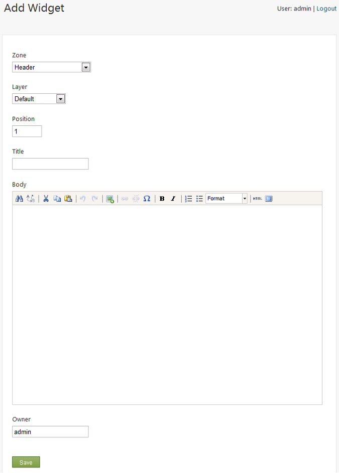

In Orchard, a widget is a fragment of UI (such as HTML) and code (such as a content part) that can be easily mapped to any location or zone in the active theme, such as a sidebar or footer zone. Examples of widgets include navigation menus, image galleries, ads, videos, and tag clouds.
This article explains the basics of widgets and shows you how to manage them.
Layers, Zones, and Widgets
In Orchard, you manage widgets by clicking Widgets in the dashboard. The Widgets screen lists the available widgets and lets you assign the widget to a layer and a zone.
You can think of a layer as a set of rules for displaying a widget (or group of widgets). For example, a layer might display a widget on a specific page only if the user is logged in. A zone helps to position a widget on a page.
The following image shows the Widgets screen.

Available Widgets
Whenever a widget becomes available (usually by enabling another feature in the Features tab on the Modules screen of the dashboard), Orchard adds it to the list of available widgets that can be added to zones in the current theme. To see the list of widgets available in a zone, in the Widgets screen, click the Add button on one of the listed zones.
For example, in the Widgets screen click Add for the Header zone. A screen is displayed that allows you to choose one of the available widgets.

The following table describes the widgets that are available by default in Orchard:
| Widget | Description |
|---|---|
| Blog Archives | Displays a list of archived entries for the specified blog. |
| Container Widget | Displays a "contained" content item, such as a list. |
| Html Widget | Displays HTML content, which is entered using the widget's editor. |
| Recent Blog Posts | Displays a list of recent posts for the specified blog. |
List of Layers
Orchard comes with a number of layers already defined. You can define additional layers as needed, as discussed later in Adding a Layer. In the Widgets screen, you can edit the existing layers by selecting a layer in the Current Layer drop-down list, or you can add new layers by clicking Add a new layer.
The following table lists the default layers, shows the rule that defines the layer, and describes the effect of the layer.
| Layer | Rule | Description |
|---|---|---|
| Default | true | Always displayed on every page. |
| Authenticated | authenticated | Displayed if the user is authenticated. |
| Anonymous | not authenticated | Displayed if the user is anonymous. |
| Disabled | false | Not displayed. This layer is provided as way to save the configuration of widgets that are not currently displayed. |
| TheHomepage | url("~/") | Displayed on the home page. |
List of Zones
In Orchard, a web page is divided into zones (regions). The available zones are defined by the website's theme. In the Widgets screen, you can see the list of all zones available for the currently selected layer. The list also shows the widgets assigned to each zone for the selected layer.
For information about the zones that are available in the default theme (TheThemeMachine), see Customizing the Default Theme.
Adding a Layer
To add a layer, in the dashboard, click Widgets. On the Widgets screen, click Add a new layer. The Add Layer screen is displayed:

To define the new layer, enter the name of the layer, a description, and the rule that defines the layer. When you're finished, click Save.
The Layer Rule value is an expression that resolves to either true or false. If it resolves to true, the widget is displayed; otherwise the widget is not displayed.
The following table summarizes the syntax for building layer rules.
| Rule Syntax | Description |
|---|---|
| url("<url path>") | True if the current URL matches the specified path. If you add an asterisk (*) to the end of the path, all pages found in subfolders under that path will evaluate to true (for example, url("~/home*")). |
| authenticated | True if the user is logged in. |
| ContentType("<Type>") | True if the content type being view matches the content type specified e.g. ContentType("Page") |
| not | Logical NOT. |
| and | Logical AND. |
| or | Logical OR. |
Your expression can use parentheses.
For example, the following expression defines a rule that displays a widget on the About page if the user is not authenticated, or on any page if the user is authenticated.
(not authenticated and url("~/about")) or authenticated
To allow multiple URL values, you can use the following syntax:
url("~/foo") or url("~/bar")
Assigning a Widget to a Zone
To assign a widget to a zone, click the Add button on a zone that you want to add the widget to, and then select the widget to add.
For example, click Add on the Header zone, and then in the Choose A Widget screen click the Html Widget.
The Add A Widget screen is displayed.

The fields you need to fill in depend on the widget you're configuring. However, all widgets have Zone, Layer, Title, and Position fields. The Position field determines the relative position of all widgets within the zone (in effect, z-order). Keep in mind that the widgets within the zone can come from multiple layers. For example, two different layers might have widgets assigned to the same zone.
The value of the Position field can be an integer or a sequence of integers separated by dots. For example, the following values are all valid: 5, 10.1, 7.5.3.1. Widgets with lower position values will be rendered before those with higher values.
After setting the values of all fields, click Save.
Editing or Deleting a Widget
To edit or delete a widget, in the Widgets screen, use the Current Layer drop-down list to select the layer that the widget is assigned to. In the list of zones displayed for the layer, click the widget you want to edit. The Edit Widget screen is displayed:

Edit the field you want to change, then click Save. To remove the widget from the zone, click Delete.
Change History
- Updates for Orchard 1.1
- 3-16-11: Updated screen shots for 1.1 version.
- Updates for Orchard 1.7
- 4-4-14: Added Content Type rule